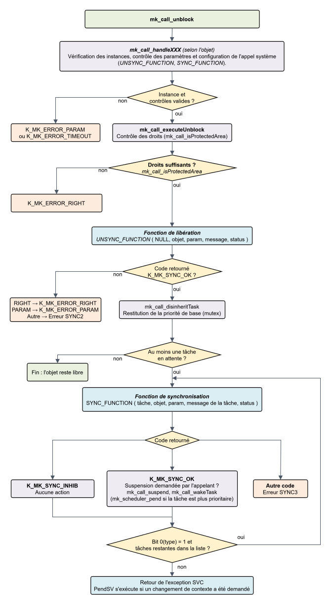

La synchronisation des tâches
L'ensemble des objets de synchronisation partage le même mécanisme de blocage et de réveil des tâches. Ce mécanisme n'est implémenté qu'une fois dans le noyau et chaque objet définit seulement ses fonctions d'obtention et de libération. Cet article décrit le fonctionnement de ce mécanisme de synchronisation du noyau.
1. Principe des mécanismes de synchronisation et de libération
Les fonctions de synchronisation sont réparties dans deux familles d'appels système :
- ✔ La famille de synchronisation. Elle est
gérée par la fonction mk_
call_ et regroupe les appels qui tentent d'obtenir un objet de synchronisation. Lorsque l'objet n'est pas disponible la tâche est bloquée.synchronise - ✔ La famille de désynchronisation ou de
libération. Elle est gérée par la fonction mk_
call_ et regroupe les appels qui libèrent un objet. Si des tâches attendent cet objet, la plus prioritaire est réveillée.unblock
Chaque objet fournit une fonction de synchronisation et une fonction de libération. Le tableau suivant liste les fonctions utilisées par chaque appel système :
| Fonction de l'API | Fonction de synchronisation | Fonction de libération |
|---|---|---|
| mk_mutex_take | mk_mutex_lock | - |
| mk_mutex_release | mk_mutex_lock (réveil) | mk_ |
| mk_semaphore_take | mk_ |
- |
| mk_semaphore_release | mk_ |
mk_ |
| mk_pool_allocSafe | mk_pool_take | - |
| mk_pool_freeSafe | mk_pool_take (réveil) | mk_ |
| mk_event_wait | mk_ |
- |
| mk_event_clear | mk_event_raz | - |
| mk_event_set | mk_ |
mk_ |
| mk_mail_post | mk_mail_set | mk_mail_get (appliquée à la tâche réveillée) |
| mk_mail_pend | mk_mail_get | mk_mail_set (appliquée à la tâche réveillée) |
Les fonctions marquées « réveil » sont exécutées suite à la libération d'un objet.
La disposition mémoire des objets
Le code générique du module de synchronisation ne connaît pas le type des objets qu'il manipule. Il doit donc accéder aux attributs des différents objets en utilisant leur position :
- ✔ le mot à l'indice 0 contient le type de l'objet.
- ✔ le mot à l'indice 3 contient la liste des tâches bloquées de l'objet.
- ✔ Pour un mutex, le mot à l'indice 2 contient l'adresse de la tâche propriétaire.
La table ci-dessous contient les quatre premiers champs des objets de synchronisation existant :
| Structure | Mot 0 | Mot 1 | Mot 2 | Mot 3 |
|---|---|---|---|---|
| T_mkMutex | type | lock | owner | pendingList |
| T_mkSemaphore | type | token | tokenNumber | pendingList |
| T_mkEvent | type | bypass | flag | pendingList |
| T_mkMailSynchro (poster et pender) | type | item | reserved | pendingList |
| T_mkPool | type | current | size | pendingList |
Chaque objet de synchronisation doit donc placer correctement ses champs dans sa structure. Le type doit occuper le premier mot et la liste des tâches bloquées doit occuper le quatrième mot. Si un objet n'utilise pas les mots deux et trois, il doit tout de même réserver leur emplacement (champs reserved ou bypass) comme le montre l'exemple ci-dessous :
/* Structure T_mkEvent */ struct T_mkEvent { uint32_t type; /* Type de l'objet */ uint32_t bypass; uint32_t flag; T_mkList pendingList; /* Liste des tâches bloquées */ T_mkAddr createByAddr; };
Le champ type combine
l'identifiant des objets de synchronisation (énumération T_mkTaskSync),
le bit de protection K_
Le prototype des fonctions de synchronisation
Toutes les fonctions de synchronisation et de libération respectent le prototype ci-dessous :
typedef uint32_t ( *T_mkSyncFunction ) ( T_mkAddr, /* Adresse de la tâche */ T_mkAddr, /* Adresse de l'objet présent à l'offset K_MK_OFFSET_SYNC_HANDLE */ T_mkAddr, /* Adresse de l'objet présent à l'offset K_MK_OFFSET_PARAM_OBJECT */ T_mkAddr, /* Adresse de l'objet présent à l'offset K_MK_OFFSET_MESSAGE */ uint32_t ); /* Statut d'interruption (p_mkStatus) */
La valeur de retour appartient à l'énumération T_mkSVCSync et possède les valeurs suivantes :
| Code | Signification |
|---|---|
| K_MK_SYNC_KO | L'objet n'a pas pu être obtenu. |
| K_MK_SYNC_OK | L'objet a été obtenu (ou libéré). |
| K_MK_SYNC_INHIB | Aucune synchronisation n'est requise. Ce code est utilisé lorsqu'une tâche en attente ne doit pas être réveillée. |
| K_MK_SYNC_RIGHT | La fonction n'a pas été exécutée car les permissions sont insuffisantes (boîtes de messages). |
| K_MK_SYNC_PARAM | La fonction n'a pas été exécutée car un paramètre est invalide (corruption d'une pool). |
Les fonctions de synchronisation doivent respecter les règles suivantes :
- ✔ Le premier paramètre contient l'adresse de la tâche ayant déclenché l'appel système. Celui-ci est nul lorsque l'appel provient d'un vecteur d'interruption ou lorsque la fonction exécutée est une fonction de libération.
- ✔ A l'exception des fonctions de libération, le résultat d'une fonction de synchronisation doit être enregistré dans le champ synchro.object de la tâche ayant déclenché l'appel système. Il prend comme valeur l'adresse de l'objet si celui-ci a été obtenu ou la valeur nulle en cas d'échec.
- ✔ Lorsque le noyau réveille une tâche suite à une libération, le paramètre
K_
MK_ de la fonction prend la valeur du champ synchro.message de la tâche réveillée. La fonction de synchronisation peut alors terminer son opération. Par exemple, copier un message pour une boîte ou enregistrer l'adresse du bloc alloué pour une pool.OFFSET_ MESSAGE
La récupération du résultat
Suite à l'appel système, les champs synchro.object et svc.result permettent à la fonction de l'API de connaître le résultat de l'appel système :
| Valeur de svc.result | Valeur de synchro.object | Signification |
|---|---|---|
| K_MK_OK | Adresse de l'objet | L'objet a été obtenu. |
| K_MK_OK | K_MK_NULL | L'objet n'a pas été obtenu (tentative sans attente ou échéance de la temporisation). |
| K_MK_OK | K_MK_INVALID_HANDLE | L'objet a été supprimé pendant que la tâche était bloquée. |
| K_MK_ERROR_* | - | Une erreur s'est produite durant l'appel système. |
2. La fonction mk_call_synchronise
La fonction mk_

Dans un premier temps, la fonction mk_
Ces dernières sont propres à chaque type d'objet. Elles vérifient que l'adresse de l'objet est valide et que celui-ci n'a pas été supprimé. Elles effectuent aussi les contrôles propres au type d'objet puis renseignent les adresses des fonctions et des objets de synchronisation dans l'objet SVC avant de lancer la séquence de synchronisation générique.
Cette séquence générique contrôle d'abord les droits de la tâche avec la routine mk_
- ✔ La synchronisation réussie, l'objet est obtenu (K_
MK_ ), la tâche poursuit alors son exécution. Pour une boîte de messages, le noyau réveille la tâche éventuellement en attente de l'objet antagoniste.SYNC_ OK - ✔ La synchronisation échoue, l'objet
n'est pas disponible (K_
MK_ ) et la temporisation est nulle. L'appel système retourne alors un code erreur et si celui-ci provient d'un vecteur d'interruption, une erreur critique est déclenchée.SYNC_ KO - ✔ La synchronisation échoue, l'objet
n'est pas disponible (K_
MK_ ) et la temporisation est non nulle, la tâche est alors bloquée suite à l'exécution de la fonction mk_call_block.SYNC_ KO
3. La fonction mk_call_block
La fonction de blocage mk_
- ✔ Elle positionne la tâche dans l'état K_
MK_ , mémorise l'adresse de l'objet de synchronisation dans la donnée synchro.object de son TCB, la durée et l'échéance de la temporisation.STATE_ BLOCKED - ✔ Elle retire la tâche de sa liste des tâches prêtes à être exécutées et actualise le registre de priorité si cette liste devient vide.
- ✔ Elle insère la tâche dans la liste des tâches bloquées de l'objet.
- ✔ Si la tâche doit être suspendue après l'envoi d'un message, elle
ajoute
l'état K_
MK_ .STATE_ SUSPENDED - ✔ Si la temporisation n'est pas infinie, elle ajoute l'état
K_
MK_ et insère la tâche dans la liste des tâches temporisées. La tâche appartient alors à deux listes distinctes.STATE_ DELAYED - ✔ Elle exécute l'héritage de priorité si l'objet est un mutex.
- ✔ Elle réalise un changement de contexte inconditionnel.
4. La fonction mk_call_unblock
La fonction mk_

Comme pour la fonction précédente, les routines mk_
- ✔ Elle exécute d'abord la fonction de libération afin que l'objet redevienne disponible.
- ✔ Si nécessaire, elle restitue la priorité de base de la tâche suite à un héritage de priorité.
- ✔ Elle analyse ensuite la première tâche dans la liste d'attente de l'objet. Si celle-ci n'est pas vide, elle exécute alors la fonction de synchronisation avec cette tâche.
- ✔ Si cette fonction retourne K_
MK_ , la tâche obtient l'objet de synchronisation puis est soit réveillée (mk_SYNC_ OK call_ ), soit suspendue (mk_wakeTask call_ ). Un changement de contexte est demandé si la tâche réveillée est plus prioritaire que la tâche courante.suspend - ✔ Si la fonction retourne K_
MK_ , la tâche reste bloquée et la tâche suivante est examinée.SYNC_ INHIB - ✔ Pour les types d'objet dont le bit 0 est positionné, la boucle de synchronisation recommence tant que la liste n'a pas été entièrement parcourue. Pour les autres objets, seule la tâche la plus prioritaire est réveillée.
5. Les erreurs de synchronisation
Un code de retour inattendu après l'exécution d'une fonction de synchronisation signale une incohérence dans l'objet ou dans les données du noyau. Celui-ci les traite donc comme une erreur critique :
| Erreur | Origine |
|---|---|
| K_MK_ERROR_SYNC1 | Une tentative de synchronisation sans attente a échoué depuis un vecteur d'interruption
malgré les contrôles
réalisés en amont (mk_ |
| K_MK_ERROR_SYNC2 | La fonction de libération a retourné un code différent de K_MK_SYNC_OK, K_ |
| K_MK_ERROR_SYNC3 | La fonction de synchronisation appliquée à une tâche bloquée a retourné un code
différent de
K_MK_SYNC_OK et K_ |
| K_MK_ERROR_SYNC4 | Une suspension a été demandée depuis un vecteur d'interruption après l'envoi d'un
message malgré les contrôles réalisés en amont
(mk_ |
Le traitement de ces erreurs est décrit dans l'article Traiter les erreurs avec les gestionnaires.
6. Les objets antagonistes
Une boîte de messages contient deux objets de synchronisation distincts qui contiennent chacun leur propre liste de tâches bloquées (le poster pour l'écriture et le pender pour la lecture). Un post attend un emplacement libre alors qu'un pend attend un message. Les deux objets sont antagonistes et chaque opération réussie peut débloquer une tâche qui attend l'autre.
Lors d'un post, la fonction mk_
Lors d'un pend, la fonction mk_
7. Créer un objet de synchronisation
La création d'un nouvel objet de synchronisation nécessite les étapes suivantes :
- ✔Définir un nouvel identifiant dans l'énumération T_mkTaskSync en ne positionnant le bit 0 que si la liste des tâches bloquées doit être parcourue entièrement.
- ✔Définir la structure de l'objet de synchronisation en respectant les contraintes de disposition. Ajouter un champ createByAddr.
- ✔ Allouer les instances de l'objet avec une pool dédiée puis écrire les fonctions de création et de suppression de l'objet.
- ✔Écrire les fonctions de synchronisation
et de
libération. Elles doivent respecter le prototype T_
mkSyncFunction . - ✔Créer une fonction mk_
call_ dans les fonctions mk_handleXXX call_ et mk_synchronise call_ .unblock - ✔Écrire les fonctions de l'API en suivant le même modèle que les fonctions existantes.